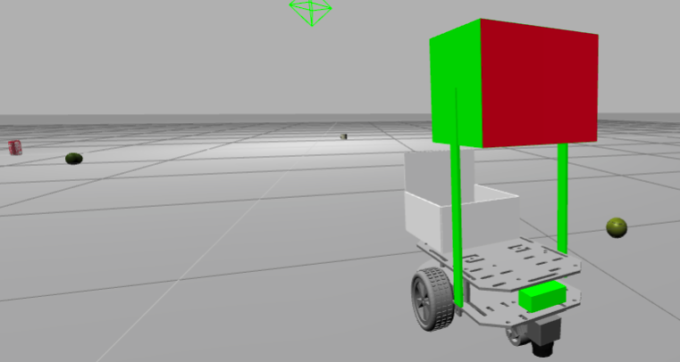
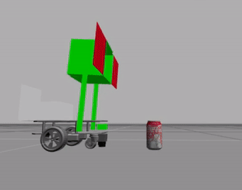
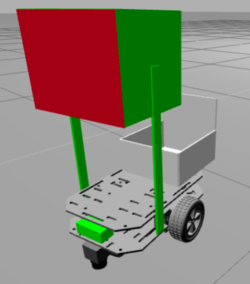
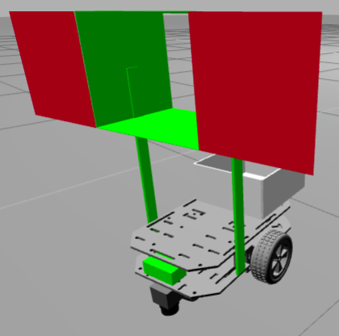
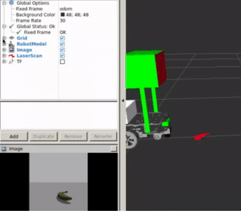
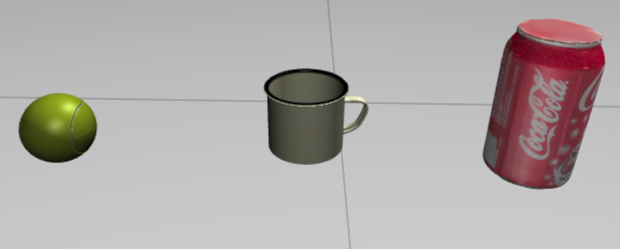
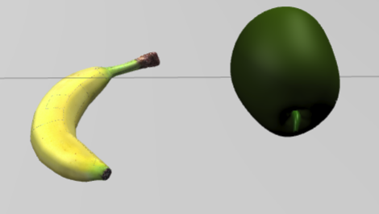

<img src="img/tensorflow_image_unit4_intro.png" width="700" />
<img src="img/robotignite_logo_text.png" width="700" />
In this microproject, you will apply all of the basic knowledge that you have of image recognision/learning with TensorFlow. You will do it through a hands-on microproject.<br>In this microproject, you will apply all of the basic knowledge that you have of image recognision/learning with TensorFlow. You will do it through a hands-on microproject.
<img src="img/tensorflow_image_unit4_pick_cokecan.gif" width="400" />
For this project, you will use this **GarbagePicker Robot**.<br>Thanks again to <a href="https://github.com/eborghi10">Emiliano Borghi</a> for the <a href="https://github.com/eborghi10/my_ROS_mobile_robot">Basic-Differential Drive Frame</a>.<br>It was modified to be bigger and to have this simple **picking system** that doesn't need you to know anything about grasping or more complex picking systems.<br>If you want to learn about more complex **grasping**, please go to the <a href="#Previous-Knowledge-Section">Previous Knowledge Section</a>. For this project, you will use this GarbagePicker Robot.
Thanks again to Emiliano Borghi for the Basic-Differential Drive Frame.
It was modified to be bigger and to have this simple picking system that doesn't need you to know anything about grasping or more complex picking systems.
If you want to learn about more complex grasping, please go to the Previous Knowledge Section.
<img src="img/tensorflow_image_unit4_show2.png" width="300" />
<img src="img/tensorflow_image_unit4_show1.png" width="300" />
As you can see, it's a simple box with moving lids that slide to trap the object inside. To use it, you just have to call this service: **/garbagecollector_pick**. This service will lower the cage, close the lids, and throw the object it has trapped inside the white rear bucket.<br>As you can see, it's a simple box with moving lids that slide to trap the object inside. To use it, you just have to call this service: /garbagecollector_pick. This service will lower the cage, close the lids, and throw the object it has trapped inside the white rear bucket.
<table style="float:left;background: #407EAF"><tr><th><p class="transparent">Execute in WebShell #1</p></th></tr></table>|
Execute in WebShell #1 |
|---|
rosservice call /garbagecollector_pick "{}"The objects are in the right spot when they are at a distance of around **0.2-0.28 meters** away, reading it from the **Hokuyo-Laser** that you have on the front.<br>You also have an RGB camera represented by the green front box. You will use that to make the **Image Recognition,** or even the **image-generation** for all of the images that you will need for the training.<br>If you don't know how to retrieve these images, please go back to the basic course, **ROS in Five Days**.The objects are in the right spot when they are at a distance of around 0.2-0.28 meters away, reading it from the Hokuyo-Laser that you have on the front.
You also have an RGB camera represented by the green front box. You will use that to make the Image Recognition, or even the image-generation for all of the images that you will need for the training.
If you don't know how to retrieve these images, please go back to the basic course, ROS in Five Days.
<img src="img/tensorflow_image_unit4_rviz.gif" width="400" />
To move the **GarbageCollector Robot** around, you just have to publish inside the topic **/garbagecollector/cmd_vel**, or if you want to move it manually with the keyboard for testing and image aquisition, launch the **garbagecollector_teleop.launch**.To move the GarbageCollector Robot around, you just have to publish inside the topic /garbagecollector/cmd_vel, or if you want to move it manually with the keyboard for testing and image aquisition, launch the garbagecollector_teleop.launch.
<table style="float:left;background: #407EAF"><tr><th><p class="transparent">Execute in WebShell #1</p></th></tr></table>|
Execute in WebShell #1 |
|---|
roslaunch garbagecollector_description garbagecollector_teleop.launchThe main objective of this project is to **clean the world of rubbish**. This means that you will have to be able to differentiate between objects that are considered **rubbish** and those that are not; in this case, fruit. Here, you have the objects and their labels:The main objective of this project is to clean the world of rubbish. This means that you will have to be able to differentiate between objects that are considered rubbish and those that are not; in this case, fruit. Here, you have the objects and their labels:
In this project, we consider rubbish to be the **TennisBall**, **Cup**, and **CokeCan**.In this project, we consider rubbish to be the TennisBall, Cup, and CokeCan.
<img src="img/tensorflow_image_unit4_rubish.png" width="400" />
We consider fruit to be the **Banana** and the **WaterMelon**.We consider fruit to be the Banana and the WaterMelon.
<img src="img/tensorflow_image_unit4_fruit.png" width="400" />
**The project will be considered to be correctly done if your robot can:*** Label all **five** objects present on the scene correctly with the labels **Rubbish** or **Fruit**, using DeepLearning TensorFlow Image Recognition.* Detect the objects labeled **rubbish**, pick them up, and place them inside its back-basket. This means that you have to create some kind of algorithm to approach and check an object that has been picked. Use the **Laser** in conjunction with your **Image-Recognition**.The project will be considered to be correctly done if your robot can:
As an **EXTRA**, now try to only pick up the fruit.As an EXTRA, now try to only pick up the fruit.
## Previous Knowledge that might be useful:<p id="Previous-Knowledge-Section"></p>If you would like to acquire some extra skills that you think might help you, feel free to do other **Robot Ignite Courses**, like **ROS Perception in 5 Days**, **ROS Manipulation in 5 Days**, and **ROS Navigation in 5 Days**. You might make your robot much more efficient, but with what you have learned in this course and with basic ROS knowledge, you can perform all of the requested tasks.<br>If you want to know more about **grasping with ROS**, please check out the courses **ROS Manipulation in 5 Days**, **ROS-Industrial 101** , **Mastering with ROS: Smart Grasping System**, **Mastering with ROS: TIAGo**, and **ROS Projects: TIAGo**.If you would like to acquire some extra skills that you think might help you, feel free to do other Robot Ignite Courses, like ROS Perception in 5 Days, ROS Manipulation in 5 Days, and ROS Navigation in 5 Days. You might make your robot much more efficient, but with what you have learned in this course and with basic ROS knowledge, you can perform all of the requested tasks.
If you want to know more about grasping with ROS, please check out the courses ROS Manipulation in 5 Days, ROS-Industrial 101 , Mastering with ROS: Smart Grasping System, Mastering with ROS: TIAGo, and ROS Projects: TIAGo.
So, thank you very much for taking this course. We would love to see your different approaches to this project. The **Team of TheConstructSim** would love to see videos of all of you students performing this task. Happy Robotics!So, thank you very much for taking this course. We would love to see your different approaches to this project. The Team of TheConstructSim would love to see videos of all of you students performing this task. Happy Robotics!